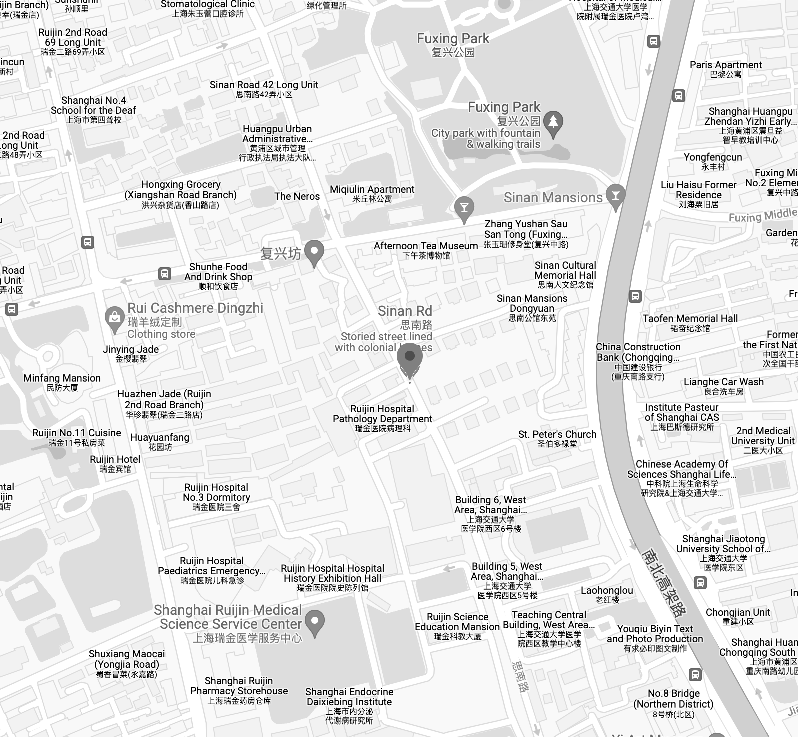

Directions

-
Take metro line 9 and get off at Dapuqiao Station, leave
from exit 1 and walk about 200 meters (220 yards) to the east.
-
Take metro line 13 and get off at Huaihai Middle Road
Station, leave from exit 1 and walk about 100 meters ( 110 yards) to the east.
-
Take metro line 10 and get off at Xintiandi Station,
leave from exit 5 and walk almost 700 meters (770 yards) to the west.
-
Take metro line 1 and get off at South Shaanxi Road
Station, leave from exit 4 and walk about 500 meters (550 yards) to the east.
-
Take metro line 12 and get off at South Shaanxi Road
Station, leave from exit 8 and walk about 900 meters (1000 yards) to the east.
-
Take bus line 26, 42, 167, 198, 320, 911, 920 and 926
and get off at Huaihai Middle Road Station.